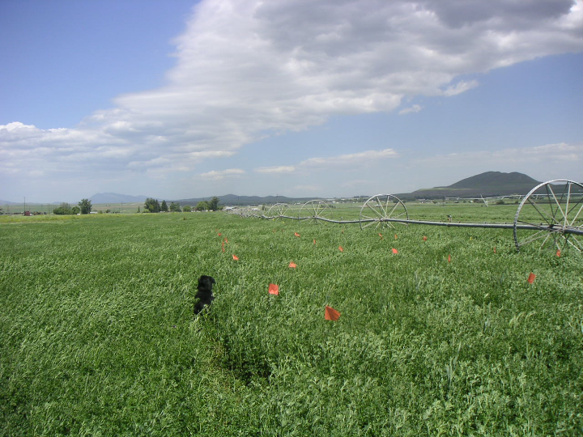

Publications

Summary
My research centered on agricultural ecology and evolution of invasive species with a focus on population biology of natural enemies in pest management.
I contributed to several pest management programs, including biological control of soybean aphids and cereal leaf beetles.
I also studied the interspecific interactions between predators - pest insects (prey) - plant systems, and ecology and evolution in introduced biological control agents,
all of which were very important topics for the development of the sustainable pest management in agricultural systems.
I regularly collaborated with researchers from the other fields and apply modern experimental and analytical tools.
I wrote multiple successful grants and my research resulted in 16 peer-reviewed papers and 1 book chapter.
I advised 17 undergraduate students, 2 graduate students, 1 international visiting scientist, and 2 international internship students.
Additionally, I was actively involved in national and international academic societies, and I organized multiple symposia at national and international meetings.
Publications
-
Rapid evolution of a divergent ecogeographic cline in introduced lady beetles
Eric M. O’Neill, Erik J. Hearn, Jessica M. Cogbill & Yukie Kajita
Evolutionary Ecology volume 31, pages 695–705(2017)
-
Predator efficiency reconsidered for a ladybird-aphid system
Pavel Kindlmann, Hironori Yasuda, Yukie Kajita, Satoru Sato and Anthony F. G. Dixon
Front. Ecol. Evol., 18 March 2015 | https://doi.org/10.3389/fevo.2015.00027
-
Do defensive chemicals facilitate intraguild predation and influence invasion success in ladybird beetles?
Yukie Kajita, John J. Obrycki, John J. Sloggett, Edward W. Evans & Kenneth F. Haynes
Journal of Chemical Ecology volume 40, pages1212–1219(2014)
-
A population genetic signature of human releases in an invasive ladybeetle
Yukie Kajita, Eric M. O'Neill, Yanbing Zheng, John J. Obrycki, David W. Weisrock
Molecular Ecology 2012 | https://doi.org/10.1111/mec.12059
-
Evidence for utilization of Diptera in the diet of field-collected coccinellid larvae from an antibody-based detection system
Susan E. Moser, Yukie Kajita, James D. Harwood, John J. Obrycki
Biological Control, Volume 58, Issue 3, September 2011, Pages 248-254
-
Sugar feeding by coccinellids under field conditions: the effects of sugar sprays in soybean
Michael P. Seagraves, Yukie Kajita, Donald C. Weber, John J. Obrycki & Jonathan G. Lundgren
BioControl volume 56, pages 305–314(2011)
-
Alfalfa fields promote high reproductive rate of an invasive predatory lady beetle
Yukie Kajita & Edward W. Evans
Biological Invasions volume 12, pages 2293–2302(2010)
-
Intraspecific alkaloid variation in ladybird eggs and its effects on con- and heterospecific intraguild predators
Yukie Kajita, J. J. Obrycki, J. J. Sloggett & K. F. Haynes
Oecologia volume 163, pages 313–322 (2010)
-
Relationships of body size, fecundity, and invasion success among predatory lady beetles (Coleoptera: Coccinellidae) inhabiting alfalfa fields
Yukie Kajita, Edward W. Evans
Annals of the Entomological Society of America, Volume 103, Issue 5, 1 September 2010, Pages 750–756 | https://doi.org/10.1603/AN10071)
-
Ovarian dynamics and oosorption in two species of predatory lady beetles (Coleoptera: Coccinellidae)
Yukie Kajita, Edward W. Evans
Pysiological Entomology, 14 May 2009 https://doi.org/10.1111/j.1365-3032.2009.00674.x
-
Reproductive responses of invasive and native predatory lady beetles (Coleoptera: Coccinellidae) to varying prey availability
Y. Kajita, E. W. Evans, H. Yasuda
Environmental Entomology, Volume 38, Issue 4, 1 August 2009, Pages 1283–1292 | https://doi.org/10.1603/022.038.0440
-
Effects of native ladybirds on oviposition of the exotic species, Adalia bipunctata (Coleoptera: Coccinellidae) in Japan
Yukie Kajita, Hironori Yasuda, Edward W. Evans
Applied Entomology and Zoology, 2006 年 41 巻 1 号 p. 57-61 | https://doi.org/10.1603/022.038.0440
-
Interactions between introduced and native predatory ladybirds (Coleoptera: Coccinellidae): factors influencing the success of species introductions
Yukie Kajita Fumiyo Takano Hironori Yasuda Edward W. Evans
Ecological Entomology, 07 March 2006 | https://doi.org/10.1111/j.0307-6946.2006.00753.x
-
Field test of the effectiveness of ladybirds in controlling aphids
Pavel KINDLMANN, Hironori YASUDA, Yukie KAJITA, Anthony F.G. DIXON
In: Hoddle MS (ed) Second International Symposium on Biological Control of Arthropods pages 441–447 (2005)
-
Asymmetric larval interactions between introduced and indigenous ladybirds in North America
Hironori Yasuda, Edward W. Evans, Yukie Kajita, Keiko Urakawa & Tadashi Takizawa
Oecologia volume 141, pages722–731(2004)
-
Effects of indigenous ladybird species (Coleoptera: Coccinellidae) on the survival of exotic species in relation to prey abundance
Yukie Kajita, Fumiyo Takano, Hironori Yasuda, Basant K. Agarwala
Applied Entomology and Zoology, 2000 年 35 巻 4 号 p. 473-479 | https://doi.org/10.1303/aez.2000.473
Copyright © 2020 Yukie Kajita